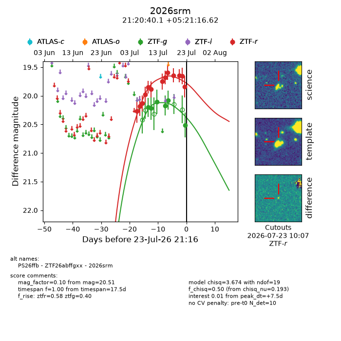
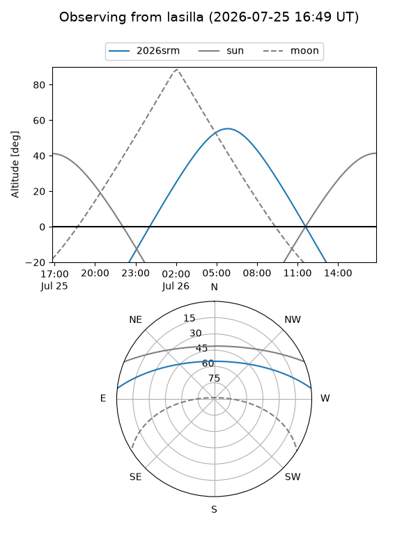
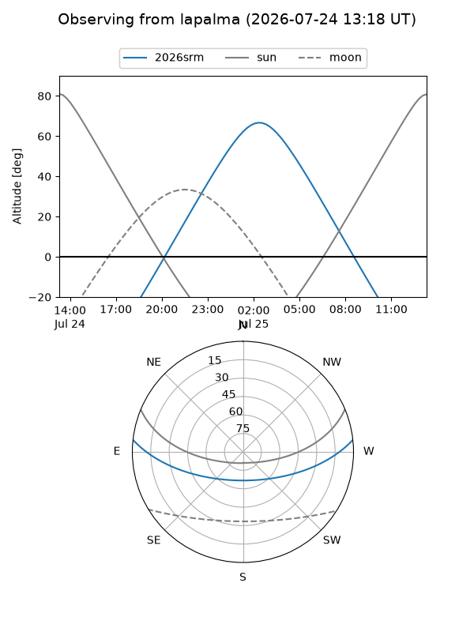
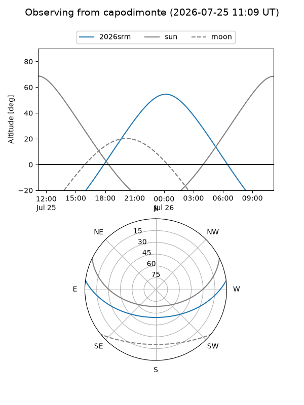
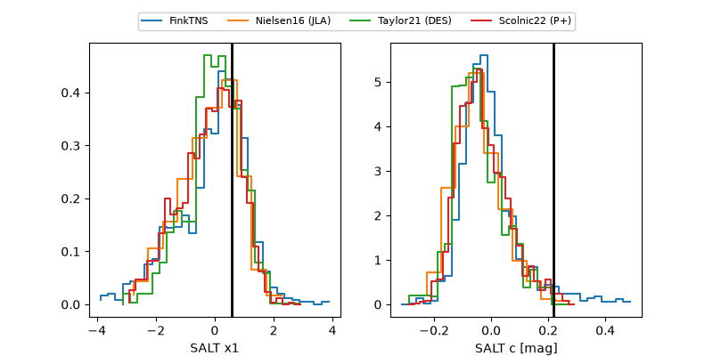

2026srm
Target 2026srm at 2026-07-23 21:19
Aliases and brokers:
FINK-ZTF: ztf.fink-portal.org/ZTF26abffgxx
Lasair-ZTF: lasair-ztf.lsst.ac.uk/objects/ZTF26abffgxx
ALeRCE-ZTF: alerce.online/object/ZTF26abffgxx
YSE-PZ: ziggy.ucolick.org/yse/transient_detail/2026srm
TNS name: wis-tns.org/object/2026srm
Direct TNS query: direct search
alt names
ZTF26abffgxx (ztf,fink_ztf)
2026srm (tns,yse)
PS26ffb (panstarrs)
Coordinates:
equatorial (ra, dec) = 320.1673,+5.35462
equatorial (HMS+DMS) = 21:20:40.14,+05:21:16.62
galactic (l, b) = (57.2711,-29.63761)
Flags:
TNS type: nan
peak dt: +7.5
Photometry:
last ztfg=20.51, ztfr=19.84
6 ztfg, 13 ztfr detections
Lightcurve

Visibility



Additional plots
